If you are here, that means you’re curious about reverse engineering and want an executable example! For our Senior Design project, our team documented the reverse engineering of a second generation Amazon Echo. Our team hopes this step by step guide will help you deep your hands into reverse engineering:
For reference, the following tools will be numbered as we go through the process.
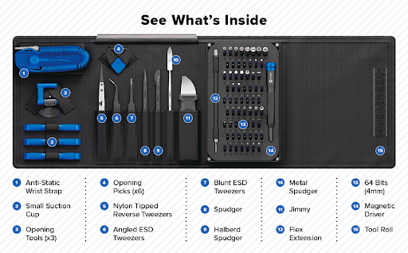
Ensure the device is unplugged and powered off before disassembly to avoid electric shock or component damage.
Use the jimmy (11) and metal spudger (10) to take off the rubber and plastic from the echo.
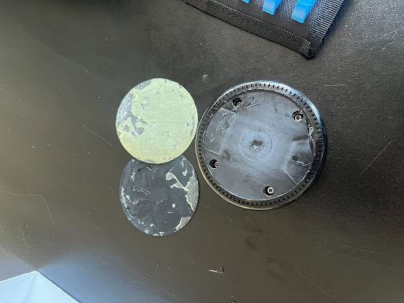
Remove the four screws using the magnetic driver (14).
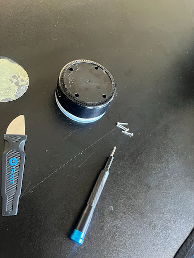
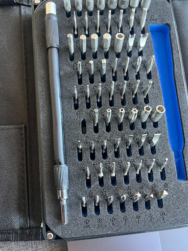
Take back cap off of the device.
Disconnect power before handling. Use ESD precautions to avoid damaging sensitive electronics.
Remove the orange ribbon cable from PCB using the jimmy (11).
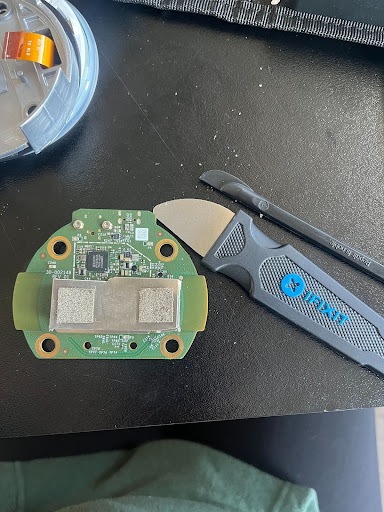
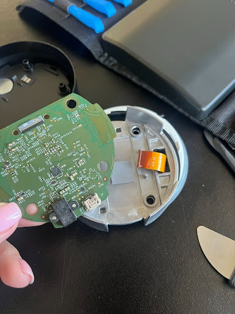
Heat gun operates at extremely high temperatures (~410°C). Risk of severe burns and fire. Use heat-resistant gloves and work in a ventilated area away from flammable materials. Flux fumes can be harmful—use ventilation or fume extraction.
Now that the main PCB is detached, find the side with the metal cap and pry off using the metal spudger (10). Identify the chips using previous RE work. Use heat gun at 410 °C. Heat up the back of the main PCB and front. Add flux to the SEC 725 B213 KMFJ20005A firmware chip (marked in red bellow). Heat up flux and chip. Use angled tweezers (6) to pull the chip up and off the PCB. Clean chip using alcohol and q-tips taking care not to leave cotton treads in the connectors.
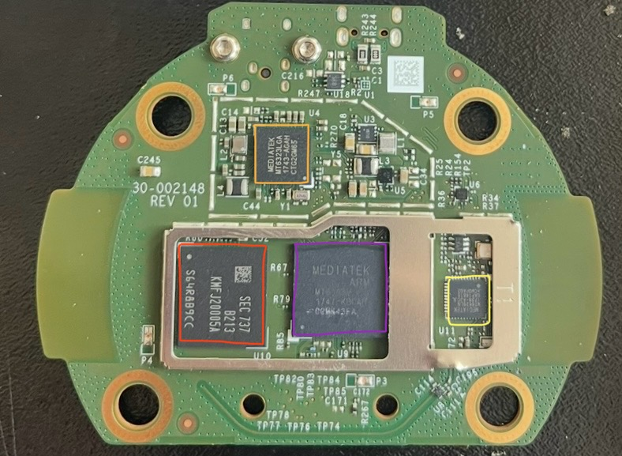
Assuming that you are using a Debian Based linux distribution all the commands should be the same. The following steps use an Ubuntu operating system:
1. First make a folder wherever you want to store the binaries extracted from the echo
>> mkdir thePathToYourFolder\YourFolderName2. Navigate to your folder
>> cd thePathToYourFolder\YourFolderNameEnsure correct orientation before powering. Improper insertion may damage the chip or reader.
3. Plug in the chip reader with your chip in place
Commands using sudo grant administrative privileges—use carefully to avoid unintended system changes.
Check that the device is recognized by running
>> sudo dmesg -wbefore plugging it in (remember to use Ctrl+C to stop the command)
You will get this information:
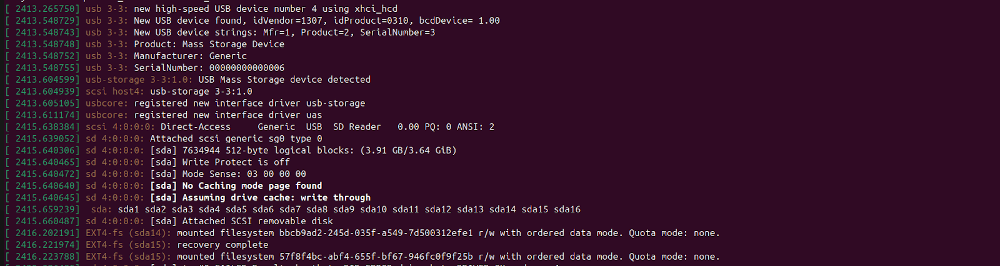
Take note of where it says sda: sda1 sda2… and right bellow it says that the file system is mounted
You can also see this better by running the command lsblk to see the storage with mountpoints
We should mention that if you did everything right and there are no problems with the chip you should proceed to steps 4a. Otherwise you might have something similar to this:
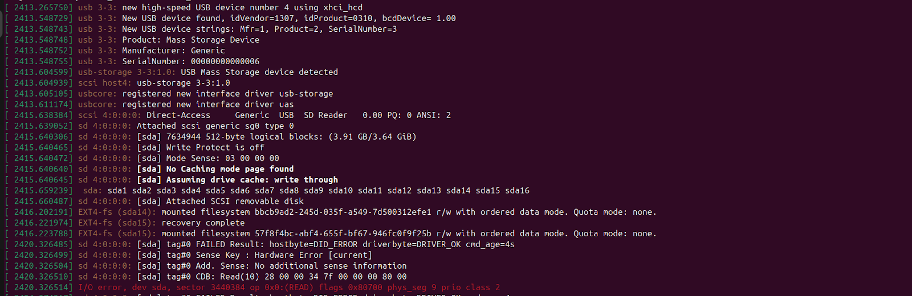
The same as before with some error at the end.
This errors mean that the chip got damaged in some way (most likely due to the extraction)
The process is almost the same, just that we will have to use a much slower command and there might be corrupted binary in important places (or maybe not). In this case follow 4b
dd can overwrite disks if used incorrectly. Double-check device paths before executing.
4a. Next we will want to copy the binary from the chip to store in our computer. That way it is a bit easier to analyse. Run the command
>> dd -if=/dev/sda1 -of=sda1.binNotice that we are using sda1 since in our case that was the name we saw in the previous step. Also note that we are in the folder we made.
4b. Because there is some corrupted segments in the chip, it will require a more involved process. First you need to download from the terminal ddrescue.
>> sudo apt install ddrescueNow we will want to run
>> ddrescue /dev/sda1 sda1.binThis last command will actually start the copying process and will try to extract as much data as is available. This copying will take a while, especially if that section has a lot of damage. After it has finished running you can see what percentage of the section had damage.
5.You will want to repeat the last command you did in the previous step but changing the 1 for every other number that you saw in step 4
Congratulations you have now extracted the information out of the chip. At this point you can turn off and unplug the chip reader as we only need to look at files folders and assembly/decompiled code.
From here on the guide is a bit more free, don't think that you have to follow all the steps one after the other. Unless you delete something, feel free to play around with the files.
Also, from this point onwards you should have Ghidra installed to be able to look at the files more closely.
First I recommend using the file command to see if linux can identify it
>> file sda1.binIf you apply it to all files, you should see that
sda10, sda11, sda12 contain the android kernel + ramdisk, and command line arguments for the kernel
On the other hand, sda13 through sda16 is just a file system.
Another interesting command that may give you some insight is
>> strings sda1.binSome of the strings contained in the file may give you an idea of what that file does.
Ensure correct file/device selection when mounting to prevent data corruption.
Since sda13 through sda16 are filesystems we can try to mount them with the command
>> mount sda13.bin <folder name>While this will work, I recommend just copying the contents of the filesystem. While you can use whichever method you like I recommend using debugfs. Here is how to do it from the folder that contains the bin files:
>> debugfs
>> rdump ./ <folder to store the filesystem>Now you can look at the filesystem without having to mount it every time.
How can I extract information about the device from the files?
Realistically there are too many files to look through and figure out how everything works, although one can certainly try, for this reason I recommend fishing for info through grep and find.
For example, in sda14, using
>> grep -r -i amazonPulls up every file that mentions Amazon in any capitalization:
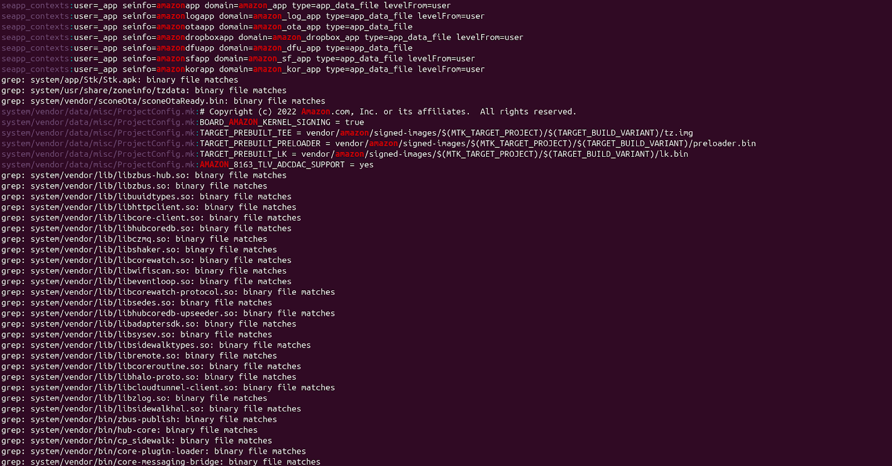
I recommend piping it to less so that it is easier to scroll:
>> grep -r -i amazon | lessIn it we can see some possible urls the device may be talking to. Although in order to know we would need to do analysis of the network usage of the device.
Another interesting thing to look at is searching for versions.
>> grep -r -i version | less
sda14/system/vendor/data/misc/ProjectConfig.mk:LINUX_KERNEL_VERSION = kernel-3.18
sda14/system/build.prop:ro.build.version.name=Fire OS 6.5.6.9 (NS6569/6009)
sda14/system/build.prop:ro.build.version.release=7.1.2
With this we note that this amazon echo appears to run a linux kernel version of 3.18. And Amazon's proprietary Android fork of Fire OS version 6.5.6.9
Seeing as to how build.prop appeared multiple times it may be a good idea to check it out
# ro.product.cpu.abi and ro.product.cpu.abi2 are obsolete,
# use ro.product.cpu.abilist instead.
ro.product.cpu.abi=armeabi-v7a
ro.product.cpu.abi2=armeabi
ro.product.cpu.abilist=armeabi-v7a,armeabi
ro.product.cpu.abilist32=armeabi-v7a,armeabi
ro.product.cpu.abilist64=
And with a quick google search this tells us that the assembly will be written in one of the following instruction sets: armeabi, Thumb-2, or Neon. But since we can see armeabi already there, there is a high likelihood it is the one we’re looking for.
This process will be useful to better understand man in the middle attacks. For information about installing Wireshark go to https://www.wireshark.org/.
First, connect your laptop to the router and turn on the laptop's wifi hotspot. Next open Wireshark and start looking at the traffic with Wireshark. Observer if there is any traffic. The first traffic is usually the laptop’s IP address, which can be omitted. Next, connect your phone to the hotspot, and look at the traffic. This will show your phone’s IP address. You may also see the urls to some of Amazon’s servers. Then, complete the alexa installation set up so that it connects to the hotspot (laptop). The newly added IP address will be the Amazon Echo. Finally, filter by DNS to see the urls to IP addresses. Then, look at the traffic of the device so that you can tell which url it is using for what communications (mostly the voice commands).
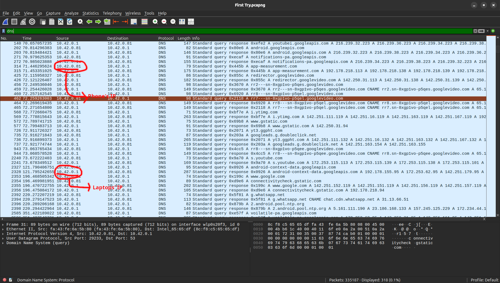
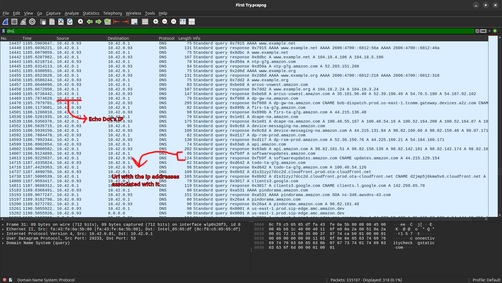
After checking that the traffic is encrypted, we need to find the SSL key. To do that we searched in the file system for “grep -i -r sslkeylogger” and we got three potential files:
This guide assumes the user has Ghidra installed. For more information visit https://ghidralite.com/.
Open Guidra and click File > Import File. Choose the binary files to upload them. Double click on the binary file to open. The software will ask you if you want to analyze the binary. Click yes, and wait for the file to be analyzed. Once done, click Search > Memory… Here you may search for strings inside the binary file. Look for “ssl”, “sslkey”, and similar words.
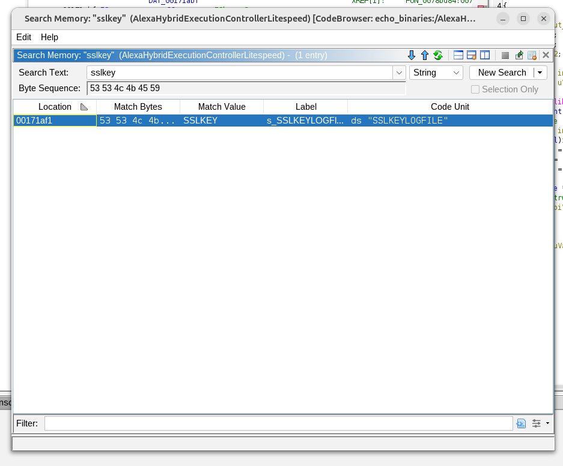
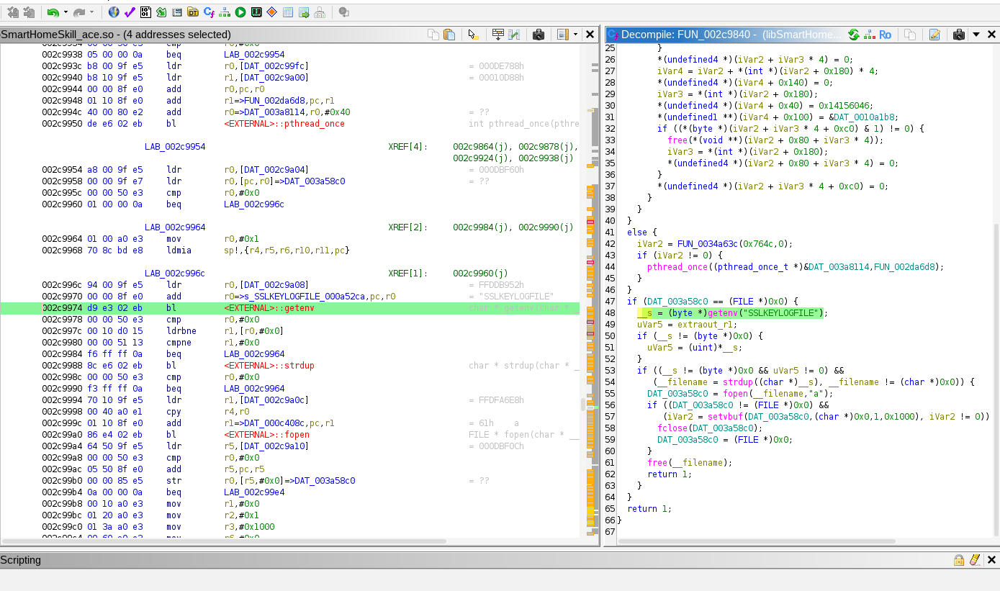
For the AlexaHybridExecutionControllerLitespeed, Ghidra was able to find a SSLKEYLOGFILE string that belongs to the following function.
undefined4 FUN_0078a0b8(void)
{
char cVar1;
int iVar2;
int iVar3;
byte *__s;
char *__filename;
int iVar4;
uint extraout_r1;
uint uVar5;
if (DAT_009a42f0 == '\x01') {
if (DAT_009a42f4 == '\0') {
DAT_009a42f4 = '\x01';
iVar2 = FUN_008078a0();
if (iVar2 != 0) {
iVar3 = (*(int *)(iVar2 + 0x180) + 1) % 0x10;
*(int *)(iVar2 + 0x180) = iVar3;
if (iVar3 == *(int *)(iVar2 + 0x184)) {
cVar1 = (char)iVar3 + '\x01';
*(int *)(iVar2 + 0x184) =
(int)(char)(cVar1 - (cVar1 + (byte)((uint)((int)cVar1 << 0x11) >> 0x1c) & 0xf0));
}
*(undefined4 *)(iVar2 + iVar3 * 4) = 0;
iVar4 = iVar2 + *(int *)(iVar2 + 0x180) * 4;
*(undefined4 *)(iVar4 + 0x140) = 0;
iVar3 = *(int *)(iVar2 + 0x180);
*(undefined4 *)(iVar4 + 0x40) = 0x14156046;
*(undefined1 **)(iVar4 + 0x100) = &DAT_00326328;
if ((*(byte *)(iVar2 + iVar3 * 4 + 0xc0) & 1) != 0) {
free(*(void **)(iVar2 + 0x80 + iVar3 * 4));
iVar3 = *(int *)(iVar2 + 0x180);
*(undefined4 *)(iVar2 + 0x80 + iVar3 * 4) = 0;
}
*(undefined4 *)(iVar2 + iVar3 * 4 + 0xc0) = 0;
}
}
}
else {
iVar2 = FUN_008144bc(0x764c,0);
if (iVar2 != 0) {
pthread_once((pthread_once_t *)&DAT_009a61cc,FUN_007a577c);
}
}
if (DAT_009a0988 == (FILE *)0x0) {
__s = (byte *)getenv("SSLKEYLOGFILE");
uVar5 = extraout_r1;
if (__s != (byte *)0x0) {
uVar5 = (uint)*__s;
}
if ((__s != (byte *)0x0 && uVar5 != 0) &&
(__filename = strdup((char *)__s), __filename != (char *)0x0)) {
DAT_009a0988 = fopen(__filename,"a");
if ((DAT_009a0988 != (FILE *)0x0) &&
(iVar2 = setvbuf(DAT_009a0988,(char *)0x0,1,0x1000), iVar2 != 0)) {
fclose(DAT_009a0988);
DAT_009a0988 = (FILE *)0x0;
}
free(__filename);
return 1;
}
}
return 1;
}
The Libcurl_nghttp2.so produced eight instances of source code with relation to the string “sslkey”. Here’s one function:
void Curl_tls_keylog_open(void)
{
char *__filename;
int iVar1;
if ((DAT_0006ca8c == (FILE *)0x0) &&
(__filename = (char *)curl_getenv("SSLKEYLOGFILE"), __filename != (char *)0x0)) {
DAT_0006ca8c = fopen(__filename,"a");
if ((DAT_0006ca8c != (FILE *)0x0) &&
(iVar1 = setvbuf(DAT_0006ca8c,(char *)0x0,1,0x1000), iVar1 != 0)) {
fclose(DAT_0006ca8c);
DAT_0006ca8c = (FILE *)0x0;
}
(*Curl_cfree)(__filename);
return;
}
return;
}
The following source code was generated from libSmartHomeSkill_ace.so in relation to the “sslkey” search:
undefined4 FUN_002c9840(void)
{
char cVar1;
int iVar2;
int iVar3;
byte *__s;
char *__filename;
int iVar4;
uint extraout_r1;
uint uVar5;
if (DAT_003a7ff8 == '\x01') {
if (DAT_003a7ffc == '\0') {
DAT_003a7ffc = '\x01';
iVar2 = FUN_0033db70();
if (iVar2 != 0) {
iVar3 = (*(int *)(iVar2 + 0x180) + 1) % 0x10;
*(int *)(iVar2 + 0x180) = iVar3;
if (iVar3 == *(int *)(iVar2 + 0x184)) {
cVar1 = (char)iVar3 + '\x01';
*(int *)(iVar2 + 0x184) =
(int)(char)(cVar1 - (cVar1 + (byte)((uint)((int)cVar1 << 0x11) >> 0x1c) & 0xf0));
}
*(undefined4 *)(iVar2 + iVar3 * 4) = 0;
iVar4 = iVar2 + *(int *)(iVar2 + 0x180) * 4;
*(undefined4 *)(iVar4 + 0x140) = 0;
iVar3 = *(int *)(iVar2 + 0x180);
*(undefined4 *)(iVar4 + 0x40) = 0x14156046;
*(undefined1 **)(iVar4 + 0x100) = &DAT_0010a1b8;
if ((*(byte *)(iVar2 + iVar3 * 4 + 0xc0) & 1) != 0) {
free(*(void **)(iVar2 + 0x80 + iVar3 * 4));
iVar3 = *(int *)(iVar2 + 0x180);
*(undefined4 *)(iVar2 + 0x80 + iVar3 * 4) = 0;
}
*(undefined4 *)(iVar2 + iVar3 * 4 + 0xc0) = 0;
}
}
}
else {
iVar2 = FUN_0034a63c(0x764c,0);
if (iVar2 != 0) {
pthread_once((pthread_once_t *)&DAT_003a8114,FUN_002da6d8);
}
}
if (DAT_003a58c0 == (FILE *)0x0) {
__s = (byte *)getenv("SSLKEYLOGFILE");
uVar5 = extraout_r1;
if (__s != (byte *)0x0) {
uVar5 = (uint)*__s;
}
if ((__s != (byte *)0x0 && uVar5 != 0) &&
(__filename = strdup((char *)__s), __filename != (char *)0x0)) {
DAT_003a58c0 = fopen(__filename,"a");
if ((DAT_003a58c0 != (FILE *)0x0) &&
(iVar2 = setvbuf(DAT_003a58c0,(char *)0x0,1,0x1000), iVar2 != 0)) {
fclose(DAT_003a58c0);
DAT_003a58c0 = (FILE *)0x0;
}
free(__filename);
return 1;
}
}
return 1;
}
M. Hughes, “Teardown Tuesday: Amazon Echo Dot v2,” All About Circuits, Nov. 1, 2016. [Online]. Available: https://www.allaboutcircuits.com/news/teardown-tuesday-amazon-echo-dot-v2/. [Accessed: Mar. 19, 2026].
Learning how things work to stay safe.
Licence: MIT